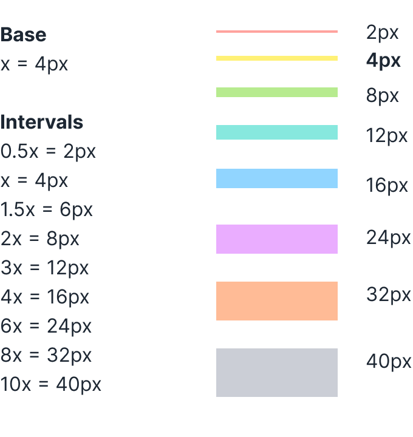
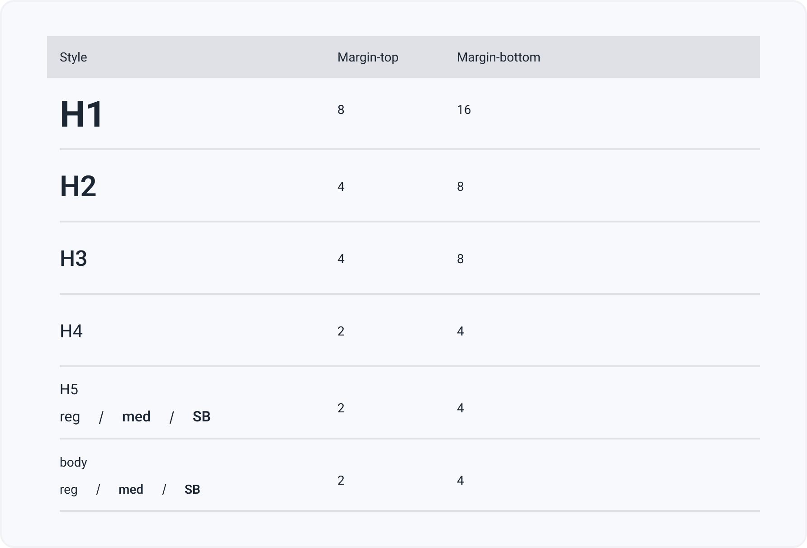

Сетка и отступы
Система отступов и размеров элементов построена вокруг базового значения поля (4px) и должна использоваться при создании автомакетов Figma. Значения интервалов и размеров должны быть кратны базовому значению (4px).
Лейаут должен быть:
- консистентным между продуктами,
- предсказуемым,
- адаптивным.
Консистентность
Мы используем одинаковую структуру интерфейса внутри разрабатываемого сервиса.
Размеры элементов
Размеры элементов по вертикали и горизонтали должны быть кратны 4px. Минимальный размер элемента -- 32 x 32 px.
Система отступов
Отступы до и после элементов также кратны 4px.
Рекомендуемые отступы до и после заголовков
В рамках дизайн-системы мы разработали рекомендуемые интервалы до и после заголовков.
